The San people are a nation that has lived in the Kalahari Desert for over 20,000 years. They do not merely survive in one of the most arid places on the planet; they read the desert like an open book. Their technologies are not gears and wires, but a profound knowledge of biology and chemistry that allows them to find resources where any modern human would perish within a day.
The primary challenge of the Kalahari is the absence of open water for long months. The Bushmen solved this task using the "siphon" extraction method. When the sand appears absolutely dry, the elders find hidden signs of moisture beneath the ground. They dig a deep hole and insert a long, hollow reed tube, the end of which is wrapped in a bundle of dry grass serving as a natural filter. A Bushman creates a vacuum, sucking water directly from the wet sand. He does not swallow this water immediately; instead, he transfers it through another tube into an empty ostrich eggshell. One such egg holds about a liter of water. After filling, the opening is sealed with wild bee wax. These "canned" supplies are buried in caches throughout the desert, creating a network of rescue stations that allows the tribe to make journeys of hundreds of kilometers across lifeless dunes.
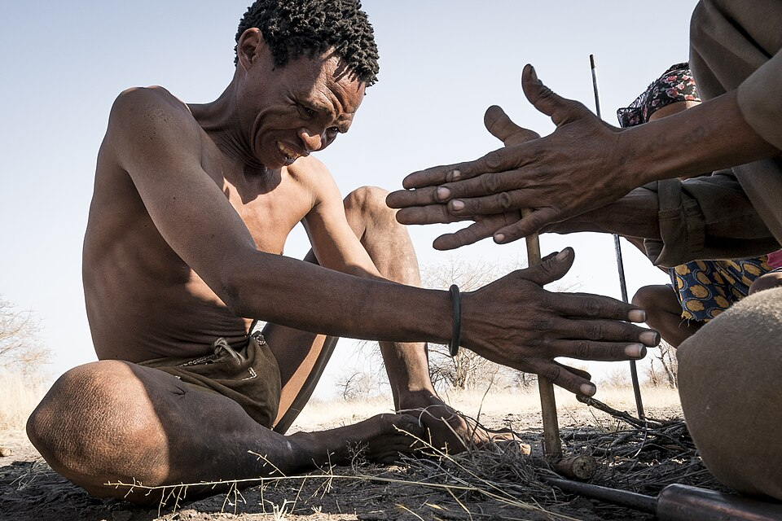
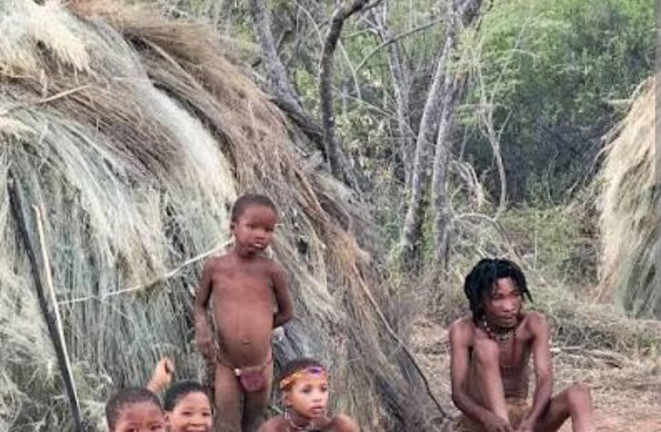
Bushman bows look small and weak, but they are deadly due to a unique poison. The San use the larvae of a specific leaf beetle (Diamphidia). They extract diamphotoxin from them—one of the most powerful natural poisons on the planet, which destroys the red blood cells in the victim's blood. San hunting is called "persistence" or endurance hunting. After wounding an antelope with an arrow, the hunter does not try to kill it immediately. He begins a pursuit that can last two or three days. Humans are the only species capable of cooling effectively through sweat, while the antelope overheats during a long run. The Bushman simply prevents the animal from lying down and resting until it collapses from heatstroke and the effects of the paralyzing poison. It is a pure victory of human thermoregulation and patience over speed.
The unique clicking language of the San people (Khoisan languages) is the pinnacle of human integration into the ecosystem. The sounds of this language imitate the natural noises of nature: the snap of a branch, the thud of hooves, or the chirping of insects. This allows hunters to communicate with each other while in close proximity to a herd of animals without causing them alarm. Animals perceive human speech not as a threat, but as the background noise of the savannah.
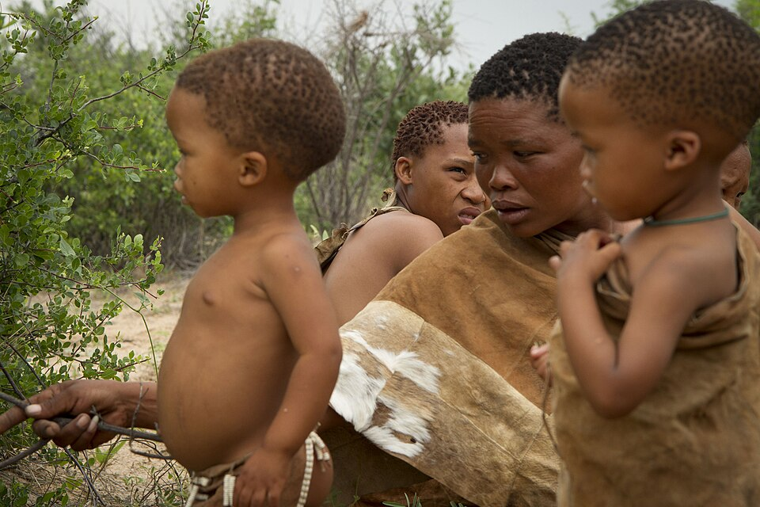
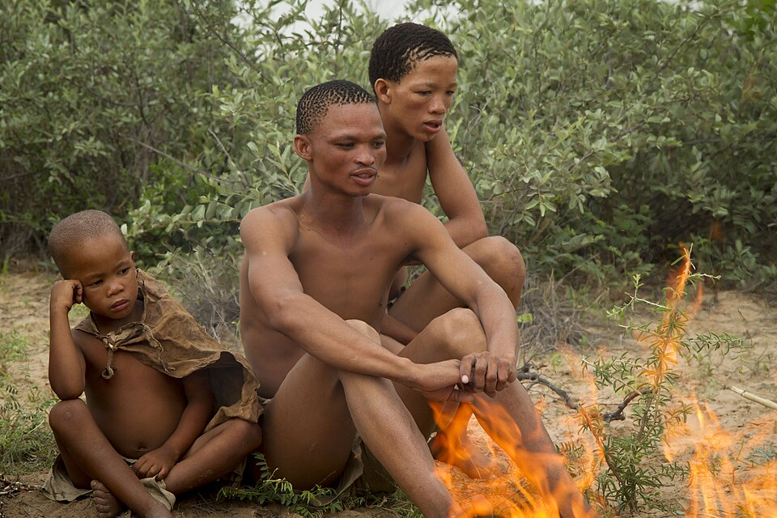
The Bushmen are unsurpassed botanists. They know hundreds of plants that can replace food or medicine. For example, they have used the Hoodia cactus (Hoodia gordonii) for centuries to suppress hunger and thirst during long treks. In navigation, they rely on phenomenal memory: a hunter can recognize a specific bush or stone that he saw only once ten years ago. They have no concept of "getting lost" because every detail of the landscape has meaning and a name for them.
In San society, there are no chiefs, kings, or a rigid hierarchy. All important decisions are made by consensus after long discussions by the fire. They have no private property regarding land or resources. The most terrible crime in their culture is greed. If a hunter has caught large game, he is obliged to share it with the entire community according to strictly established rules, where even the weakest member of the tribe receives their share. This is a society of absolute equality, which has allowed them to preserve their culture unchanged for tens of millennia.
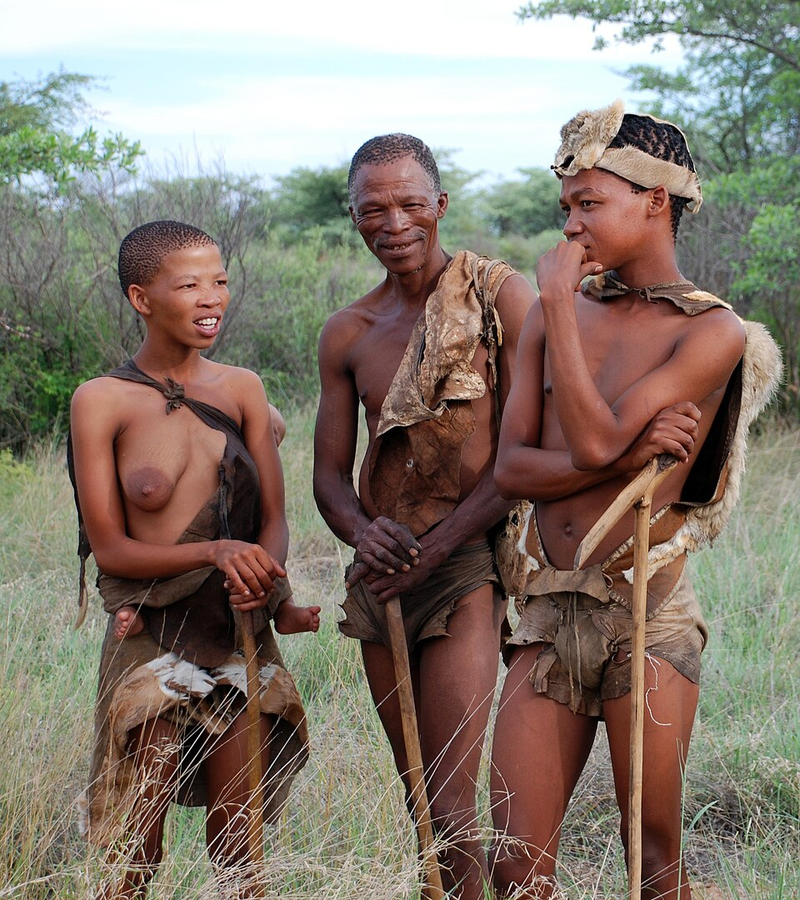
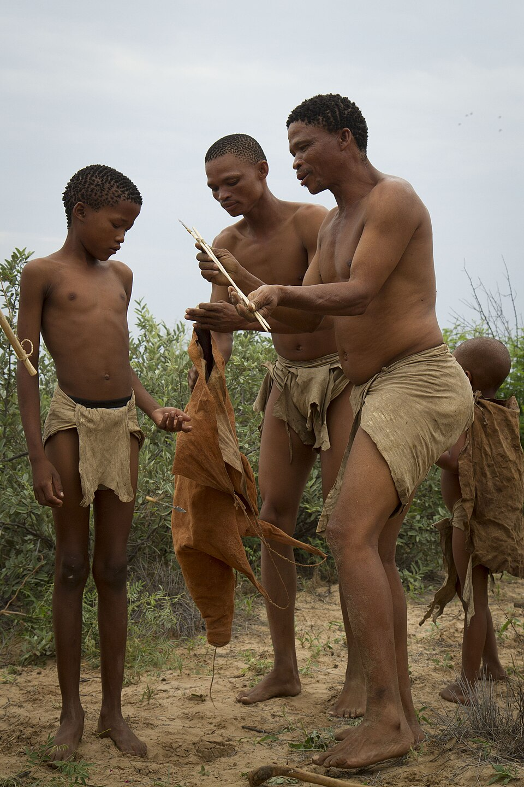
The upbringing of children among the San Bushmen is built on principles of absolute freedom, the absence of aggression, and early integration into the desert ecosystem. This is one of the most peaceful models of upbringing, where a child is considered a full member of the community from the first days of life. In San culture, physical punishment or raising one’s voice at a child is a taboo. Children are treated as equals. Parents do not impose their will but act as mentors. It is believed that a child must realize the danger or wrongness of an action through experience, rather than through fear of a parent.
The Bushmen have no formal education; all survival skills are passed on during play. Boys from the age of 4–5 are given small bows and arrows (without poison). They train on insects or small rodents, honing the marksmanship that will later become a matter of survival for the entire group. Girls accompany their mothers everywhere, learning from the shape of leaves or barely visible cracks in the soil how to find edible roots and bulbs.
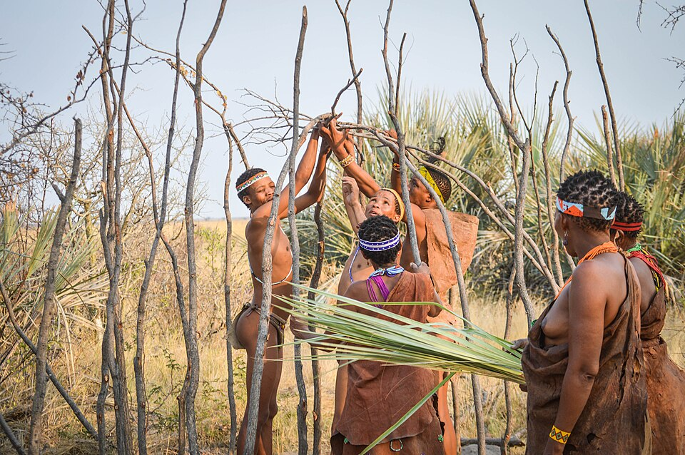
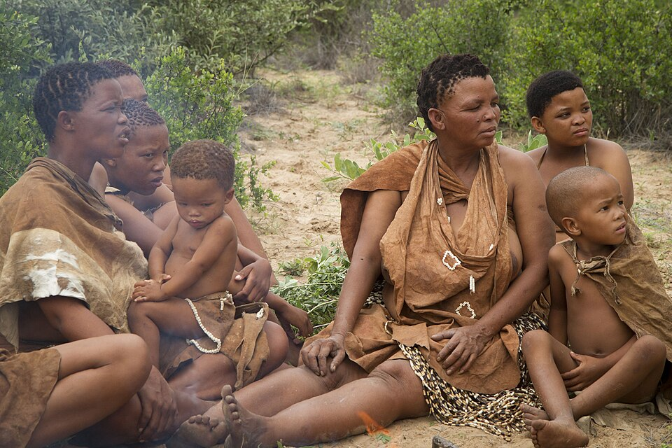
The Bushmen begin teaching children to "read" the desert even before they learn to speak fluently. Children learn to distinguish hundreds of animal paw prints, understanding not only the species of the beast but also its sex, age, health status, and how long ago it passed here. The child is instilled with the idea that they are a part of nature, not its master. Hunting is perceived not as a sport, but as a sacred dialogue with the desert.
A child among the San is the responsibility of the entire group, not just the biological parents. Any adult in the camp can feed, calm, or give advice to any child. This creates a sense of deep security and trust in all members of the tribe for the children. In Bushman games, there are rarely winners and losers. The main goal of any game is to teach children to cooperate and act harmoniously.
The transition to adult life occurs not upon reaching a certain age, but upon achieving a result. A boy is considered a man only when he independently tracks and catches his first large antelope. After the first successful hunt, an elder makes small incisions on the youth's body and rubs in ashes from the meat of the caught animal, symbolizing the merging of the spirits of the hunter and the beast.
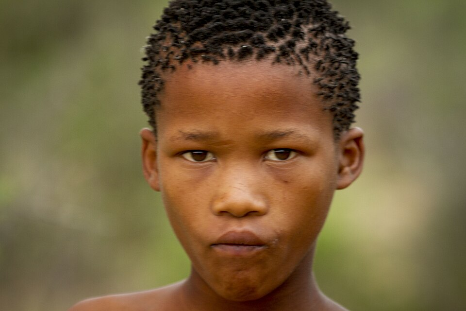
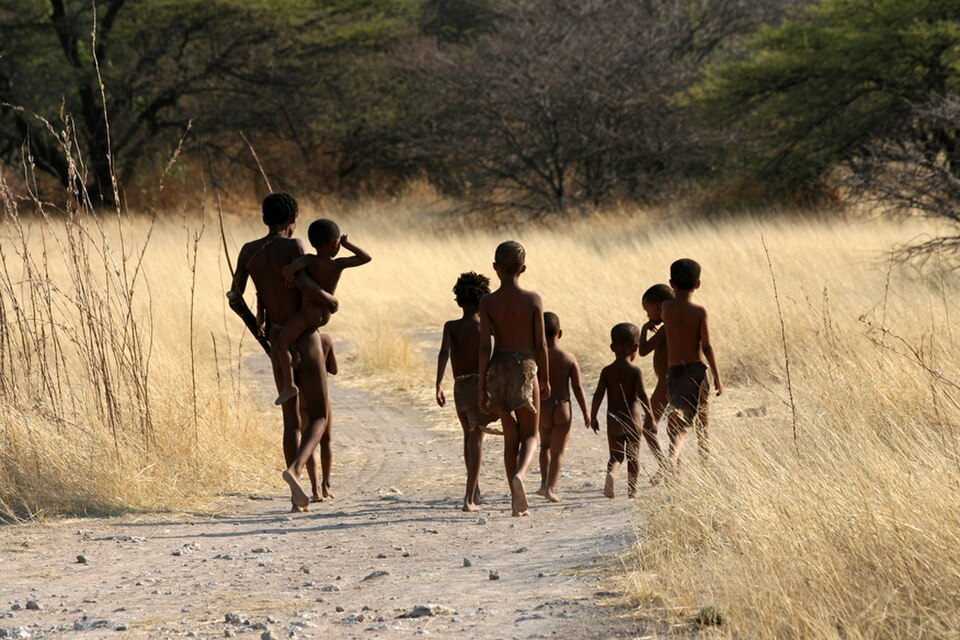
The San Bushmen have one of the most poetic legends about the origin of the stars, which perfectly explains how they navigate the night desert. According to San myths, in the very beginning of time, the night sky was absolutely black and terrifying. People were afraid of the darkness because spirits and predators hid in it, and finding the way home was impossible. One day, a young girl with a fiery character sat by the fire. She felt hurt that people were so helpless in the night. She scooped up a handful of hot white ash and sparks from the fire and tossed them high into the sky. She shouted: "Fly and become light, so that we may always see the way!"
The sparks froze in the heights, turning into bright stars, and the white ash stretched across the sky in a wide band, creating the Milky Way. Since then, the Bushmen call the Milky Way the "Backbone of the Night." They believe that this starry river not only illuminates the earth but also holds up the sky so that it does not fall to the ground.
An important tradition is associated with this legend: San hunters believe that the stars are the eyes of their ancestors watching them from above. When a hunter is far in the desert, he "talks" to the stars, asking them to guide him to prey. They use the position of the "Backbone of the Night" as a living map, determining the direction and time until dawn with accuracy down to the minute.
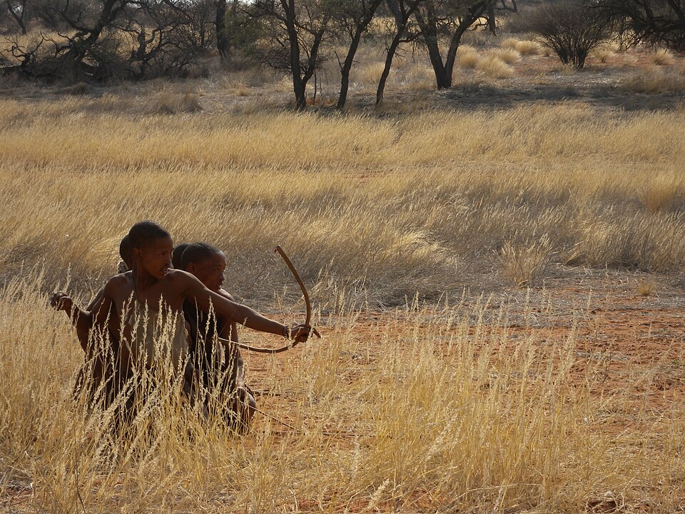
The San Bushmen are not just a relict tribe; they are a living archive of humanity. Their existence proves that true progress is not always measured by the complexity of machines. For tens of thousands of years, they have perfected a technology that we are only beginning to realize—the technology of absolute harmony with the environment. In a world struggling with environmental crises and resource depletion, the San experience becomes invaluable. Their ability to extract water from sand, their social equality, and their deepest respect for every living soul are lessons that modern civilization must learn anew. As long as the "Backbone of the Night" shines in the sky, the knowledge of the San people will remind us of who we are and where we came from.